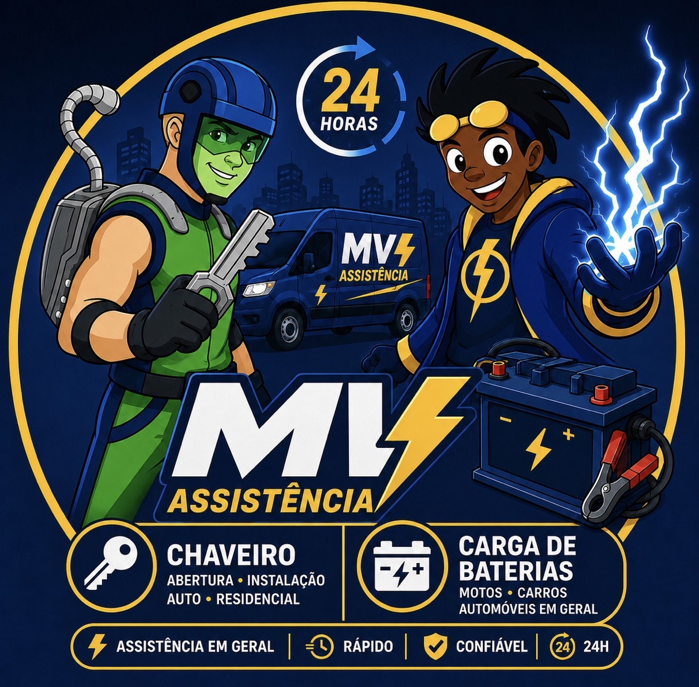

A MV Assistência é a solução completa para chaveiro, abertura automotiva, carga de bateria, troca de pneu, entregas de malotes e demais serviços particulares em São Paulo. Atendimento rápido, técnicos preparados e compromisso com a excelência.

Soluções completas para segurança, assistência automotiva, emergências e demandas particulares
Atendimento rápido para abertura de casas, apartamentos e condomínios, com técnica profissional e sem danos à fechadura.
ResidencialDesbloqueio técnico de veículos nacionais e importados, preservando sistema elétrico, travas e fechaduras.
AutomotivoAssistência emergencial para bateria descarregada em carros, motos e automóveis em geral, com atendimento ágil e seguro.
EmergênciaSuporte emergencial para troca de pneu em situações de imprevisto, com foco em rapidez, segurança e praticidade no local.
AutomotivoRenovação do miolo da fechadura para aumentar a segurança de residências, empresas e imóveis recém-ocupados.
SegurançaInstalação e manutenção de fechaduras digitais com suporte a senha, biometria, cartão, aplicativo e automação residencial.
TecnologiaServiço de entrega e retirada de malotes, documentos e pequenos volumes com agilidade, cuidado e comunicação direta.
LogísticaAtendimento sob demanda para serviços particulares, apoio emergencial e solicitações específicas conforme a necessidade do cliente.
Sob demandaA MV Assistência é sinônimo de confiança e agilidade. Com uma equipe treinada e equipamentos de última geração, entregamos soluções que vão desde a abertura de portas e veículos até serviços de emergência automotiva e entregas de malotes.
Nosso compromisso é resolver seu problema com rapidez, preservando seu patrimônio e oferecendo total transparência. Disponíveis 24 horas por dia, 7 dias por semana, estamos sempre prontos para atender você onde estiver na Grande São Paulo.
Excelência operacional que vai além da abertura de portas
Estamos prontos para atender você a qualquer hora, incluindo madrugadas, finais de semana e feriados.
Equipe preparada para serviços residenciais, automotivos e emergenciais com postura profissional.
Utilizamos ferramentas adequadas para garantir agilidade, segurança e preservação do patrimônio.
Atendimento transparente, comunicação direta e compromisso com a resolução do problema.
🔓 A MV Assistência é referência em serviços especializados de abertura de portas, manutenção de fechaduras e assistência automotiva, atendendo residências, veículos e demandas particulares com agilidade, discrição e profissionalismo.
Nossa operação une chaveiro técnico, socorro automotivo (carga de bateria, troca de pneu), entregas de malotes e atendimentos sob medida — tudo com a mesma qualidade e compromisso. Cada serviço é executado por profissionais treinados e equipamentos modernos, garantindo solução rápida sem danos ao seu patrimônio.
⏰ Atendimento 24/7, porque sabemos que emergências e necessidades particulares não escolhem horário. Estamos sempre prontos para atender você com transparência, eficiência e respeito.
Fale com um especialistaAtendemos São Paulo e regiões próximas com rapidez
Regiões especiais sob consulta — fale conosco pelo WhatsApp.
Histórias reais de quem confiou na MV Assistência
Atendimento imediato 24 horas para chaveiro, automotivo, carga de bateria, troca de pneu, malotes e demais serviços particulares.